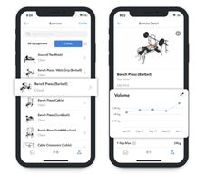
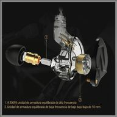

Ajuste seguro y ergonómico: Los auriculares vienen con diferentes tamaños de almohadillas y ganchos para las orejas que proporcionan un ajuste cómodo y seguro, evitando que se caigan durante el ejercicio.

Aplicación complementaria: Una aplicación exclusiva ofrece funciones adicionales como seguimiento de actividades físicas, recomendaciones de entrenamientos y ajustes personalizados de audio.

Cancelación de ruido: Gracias a la calidad de los materiales aisla el ruido exterior lo que permite a los usuarios sumergirse completamente en su música, eliminando distracciones externas.
Batería de larga duración: Ofrecen una batería de larga duración que permite varias horas de reproducción continua, lo que garantiza que no te quedes sin música durante tus entrenamientos más largos.